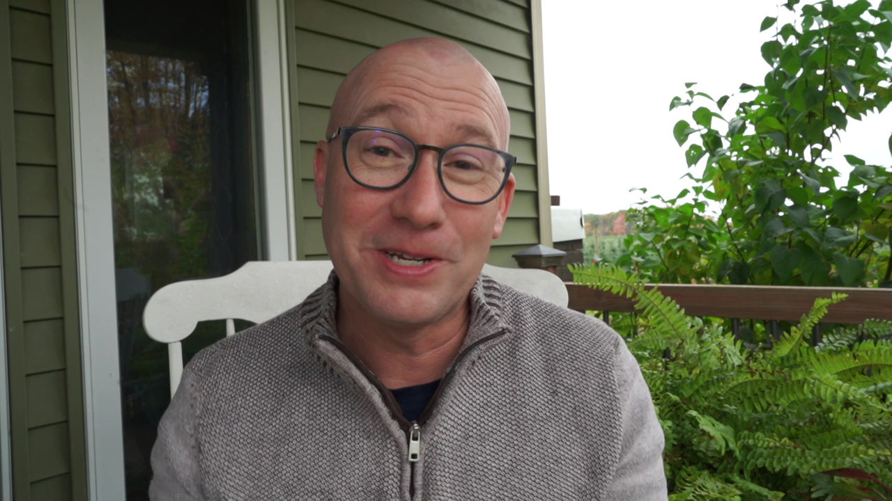

Leadership and ministry can often feel isolating. It's true that finding someone to walk alongside you and provide a safe space for processing and brainstorming is essential. While you may have well-intentioned individuals within your staff, board, or mentor circle, or even your spouse, it's important to acknowledge that they may also bring their own agendas to the conversation. A coach, on the other hand, offers a safe space where you can openly work through challenges without the fear of repercussions.
Consider coaching if you want to:

Chris Cowling combines years of ministry and life experience, with keen and practical insights...
Questions and Myths about Coaching
Someone to assist you in finding a safe space to process, gain perspective, and develop a plan — with an agenda-free approach. A coach helps you build self-awareness and establish healthy boundaries.
Counseling addresses past pain affecting current wellness.
Consulting shares expert knowledge.
Coaching assists people "in a relatively healthy place" who need perspective to move forward while stuck.
Try Coaching for free